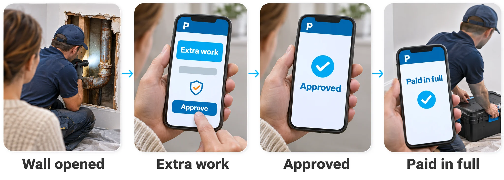
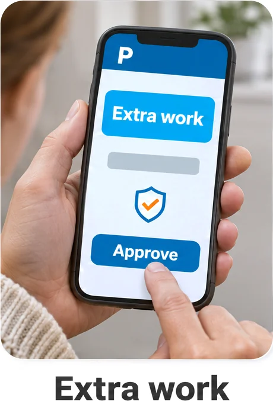
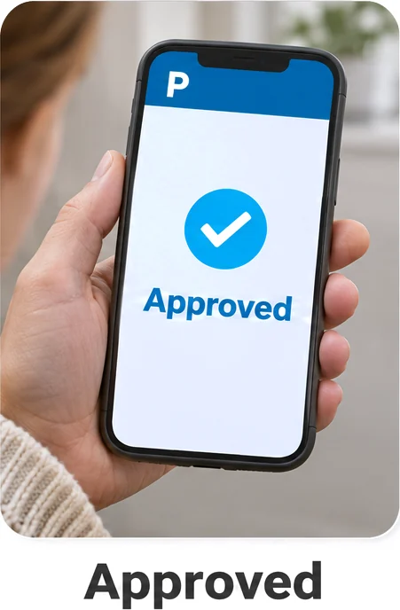
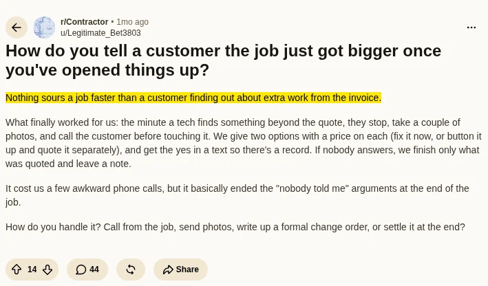

Paid Without Surprises






- Problem
- A surprise extra, a held deposit or a missed deadline takes my money after the work is done.
- Who has it
- Providers who open walls, take deposits or wait on late payers.
- What people say
- “Nothing sours a job faster than a customer finding out about extra work from the invoice.” Contractor on Reddit, r/Contractor, 2026-10-17

Open the post